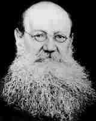

Thursday, June the 19th, 2008
back to: title, date or indexes
This piece first appeared in March 2006.
For a brief period in the middle of the last century, the phrase “two men in a boat” tripped off the tongue as easily as the more familiar Three Men In A Boat of Jerome K Jerome's comic novel. It was a very brief period, no more than a fortnight, but during that time the whole world was a-buzz with Basil and Guido's Kropotkin Fanfaronade. Unusually for a dance routine in praise of a totemic anarchist, performed on a rowing boat to the accompaniment of a shorebound orchestra, dance band, light show, perfumes and fireworks, it captured the popular mood. Thousands of people—some say millions—trekked to the lake near Bodger's Spinney to witness the spectacle during its two-week run, and Basil and Guido became overnight celebrities, fawned over in what, with retrospect, was an outbreak of mass hysteria. Within days of the final performance, during which an orphan child in the audience became overexcited and was clonked on the head with an oar, the whole thing was forgotten.
Trudging around the lake today, it is hard to picture the ecstatic scenes that took place here fifty years ago. There are no longer any boats to be seen, and the lake itself is surrounded by a tall electrified security fence. It is said that monstrous aquatic beings with flippers and tendrils swim and writhe below the surface, or that the water is poisoned, or even that the lake is haunted by the shade of that orphan child, though she only suffered mild concussion and lived long after the oar incident. These are just stories, believed only by the credulous, but what is beyond doubt, and readily apparent to anyone who wanders there, as I do, is that the lake is dead, choked by weeds, choked beyond hope.
It was so different on the bright summer afternoon in 1951 when Basil and Guido disembarked from their hired charabanc and stood hand in hand, rapt in wonder, before laying out their picnic rug by the jetty. Freshly graduated from Doctor Blodgett's Terpsichorean Academy For Keen Young Chaps, the ill-matched duo were touring the land seeking a lake, pond, or other body of water on which to stage their Kropotkin Fanfaronade.
The spark of the idea came from Guido. Guido's brain was thick with Bible-learning, but he held the Russian anarchist Peter Kropotkin (1842–1921) in high esteem, having fallen under his spell after reading a translated copy of “Research On The Ice Age”, an article Kropotkin published in Notices of the Imperial Russian Geographical Society in 1876. Thereafter, impressionable young Guido devoured everything by the Russian he could lay his hands on. When Blodgett demanded that his students choose a subject to interpret via the medium of dance, Guido was already decided.

Basil, roped in as collaborator, was initially reluctant until shown a photograph of Kropotkin, whose beard thrilled him, as no doubt it would thrill anyone who has the slightest interest in majestic nineteenth century facial hair. It was Basil who brought to their partnership the rowing boat element, possibly because he misunderstood Blodgett's instructions. Basil was by no means stupid, but he was notoriously inattentive. We should be glad it was so, for who can imagine the Kropotkin Fanfaronade taking place on dry land? By confining the dance to the limited space afforded by a rowing boat, Basil forced himself and Guido to find radical solutions to seemingly intractable problems. Ideal as it was as a stage upon which to show Kropotkin's periods of imprisonment, in the Peter and Paul Fortress in St Petersburg, and later in France, the rowing boat had to be wholly re-imagined when the dance addressed the anarchist's field trips to Finnish and Swedish glaciers. Basil and Guido succeeded triumphantly.
A fanfaronade can be defined as an ostentatious display. It certainly was. There was the rowing boat on the lake, with the two dancers aboard, pirouetting, jumping about, striking poses, and of course rowing, while on the shore a full orchestra supplemented by a dance band with a slick crooner played what can only be described as very frightening music. Guido's parents, meanwhile, were scampering around operating the light show and the complex piping system that sent jets of exotic perfumes wafting over the crowds.
And yet, and yet… what ought to have been the beginning of a whole new strand of rowing boat-based dance extravaganzas, with Basil and Guido the pioneers and masters of the form, was in the end just a flash in the pan. Though they had sold enough tickets to keep the Kropotkin Fanfaronade running well beyond its two-week run, Bodger's Spinney bye-laws meant it had to end. In any event, Guido now fell victim to the jangles and was carted off to a mysterious clinic hewn into an inaccessible mountainside, and Basil became a bus conductor. They never worked together again.
Hooting Yard on the Air, June the 19th, 2008 : “A Snapshot From The History Of Athletics” (starts around 19:30)
Hooting Yard on the Air, March the 24th, 2016 : “Fear Eats the Soul” (starts around 20:40)